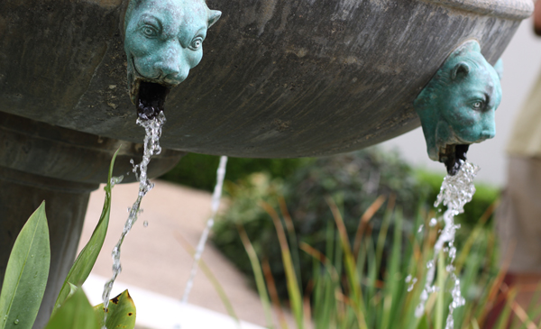

Sunny East Garden at the Getty Villa
It is hard to believe, but there are about 300 varieties of plants at the East Garden at the Getty, making the experience truly remarkable. This area is one of the most tranquil spaces at the Villa. As I wandered around, enjoying shade provided by sycamore and laurel trees and serenaded by splashing water from two sculptural fountains, I couldn't help but think of ancient Rome and the role of the garden 20 centuries ago. It was a place of peace and … Read More